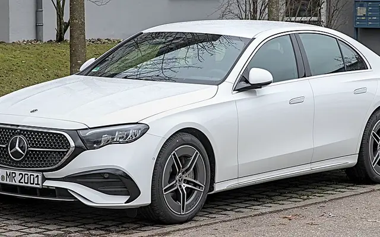

Par Motor › Precios por modelo › Mercedes-Benz Clase E
Precio de segunda mano · noviembre de 2026¿Cuánto vale un Mercedes-Benz Clase E de segunda mano?

Precio justo estimado de un Mercedes-Benz Clase E usado en España, año por año, con los kilómetros normales para su edad y en buen estado: de 6.200 € a 64.300 €. Para tasar el tuyo con sus kilómetros reales y su estado, usa el tasador gratis.
Precios del Mercedes-Benz Clase E por año
Clase E W211 (2002–2009)
Precio de nuevo: E 200 K 184 CV, 44.000 € · E 220 CDI 170 CV, 45.000 € · E 280 CDI 190 CV, 52.000 €
| Año | Km normales | E 200 K 184 CV · Gasolina | E 220 CDI 170 CV · Diésel | E 280 CDI 190 CV · Diésel |
|---|---|---|---|---|
| 2009 | 100.000 km | 11.200 € | 11.100 € | 12.900 € |
| 2008 | 100.000 km | 10.300 € | 10.200 € | 11.800 € |
| 2007 | 100.000 km | 9.500 € | 9.400 € | 10.900 € |
| 2006 | 100.000 km | 8.700 € | 8.700 € | 10.000 € |
| 2005 | 100.000 km | 8.000 € | 8.000 € | 9.200 € |
| 2004 | 100.000 km | 7.400 € | 7.300 € | 8.500 € |
| 2003 | 100.000 km | 6.800 € | 6.700 € | 7.800 € |
| 2002 | 100.000 km | 6.200 € | 6.200 € | 7.200 € |
Clase E W212 (2009–2016)
Precio de nuevo: E 200 184 CV, 47.000 € · E 220 CDI 170 CV, 46.000 € · E 300 BlueTEC Hybrid 231 CV, 56.000 €
| Año | Km normales | E 200 184 CV · Gasolina | E 220 CDI 170 CV · Diésel | E 300 BlueTEC Hybrid 231 CV · Híbrido |
|---|---|---|---|---|
| 2016 | 100.000 km | 19.600 € | 20.500 € | 24.600 € |
| 2015 | 100.000 km | 18.800 € | 18.800 € | 23.600 € |
| 2014 | 100.000 km | 18.000 € | 17.300 € | 22.600 € |
| 2013 | 100.000 km | 16.800 € | 15.900 € | 21.000 € |
| 2012 | 100.000 km | 15.400 € | 14.600 € | 19.300 € |
| 2011 | 100.000 km | 14.200 € | 13.500 € | 17.800 € |
| 2010 | 100.000 km | 13.000 € | 12.400 € | 16.300 € |
| 2009 | 100.000 km | 12.000 € | 11.400 € | 15.000 € |
Clase E W213 (2016–2023)
Precio de nuevo: E 200 d 160 CV, 50.000 € · E 200 197 CV, 52.000 € · E 300 de (enchufable) 306 CV, 64.000 €
| Año | Km normales | E 200 d 160 CV · Diésel | E 200 197 CV · Gasolina | E 300 de (enchufable) 306 CV · Híbrido enchufable |
|---|---|---|---|---|
| 2023 | 70.000 km | 34.500 € | 37.400 € | 41.400 € |
| 2022 | 90.000 km | 29.200 € | 34.400 € | 38.100 € |
| 2021 | 100.000 km | 26.600 € | 30.300 € | 33.600 € |
| 2020 | 100.000 km | 26.000 € | 26.200 € | 29.000 € |
| 2019 | 100.000 km | 25.400 € | 24.300 € | 26.900 € |
| 2018 | 100.000 km | 24.800 € | 23.500 € | 26.000 € |
| 2017 | 100.000 km | 24.000 € | 22.600 € | 25.000 € |
| 2016 | 100.000 km | 22.300 € | 21.700 € | 24.100 € |
Clase E W214 (2023–hoy)
Precio de nuevo: E 200 204 CV, 62.000 € · E 220 d 197 CV, 65.000 € · E 300 e (enchufable) 313 CV, 70.000 €
| Año | Km normales | E 200 204 CV · Gasolina | E 220 d 197 CV · Diésel | E 300 e (enchufable) 313 CV · Híbrido enchufable |
|---|---|---|---|---|
| 2026 | 5.000 km | 63.300 € | 63.700 € | 64.300 € |
| 2025 | 20.000 km | 52.700 € | 53.100 € | 53.500 € |
| 2024 | 35.000 km | 48.400 € | 48.800 € | 49.200 € |
| 2023 | 50.000 km | 44.600 € | 44.900 € | 45.300 € |
Kilómetros normales: 15.000 al año en gasolina, híbridos y eléctricos, y 20.000 en diésel, con un máximo de 100.000 km (por encima no tasamos: el precio depende demasiado del historial de cada coche). Cifras redondeadas a 100 €.
Preguntas frecuentes
¿Cuánto vale un Mercedes-Benz Clase E de segunda mano?
Según el año, la versión y los kilómetros, un Mercedes-Benz Clase E usado vale hoy de 6.200 € a 64.300 € en España. El más barato de nuestra tabla es un E 220 CDI de 2002 (6.200 €) y el más caro un E 300 e (enchufable) de 2026 (64.300 €). Son precios justos estimados entre particulares y profesionales, con los kilómetros normales para su edad y en buen estado.
¿Qué motorizaciones tiene el Mercedes-Benz Clase E?
En nuestra base de datos hay versiones gasolina, diésel, híbrido y híbrido enchufable, en 4 generaciónes: Clase E W211, Clase E W212, Clase E W213 y Clase E W214.
¿Cómo sé si me piden demasiado por un Mercedes-Benz Clase E?
Abre el tasador de Par Motor, elige el Mercedes-Benz Clase E, el año y los kilómetros reales, y escribe lo que te piden. Te diremos si está por debajo del precio justo (chollo) o por encima (caro). Es gratis y no pide registro ni matrícula.
Otros Mercedes-Benz
- CLA
- Clase A
- Clase B
- Clase C
- Clase G
- Clase S
- Clase T
- Clase V
- CLK
- CLS
- EQA
- EQB
- EQE
- EQS y EQC
- GLA
- GLB
- GLC
- ML y GLE
- SL y AMG GT
- SLK y SLC
Compara su coste real
El precio de compra es solo una parte. Mira cuánto te costaría al mes con combustible, seguro, neumáticos, mantenimiento y lo que pierde de valor.
Abrir el comparador →